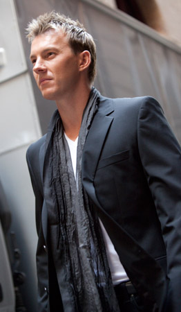
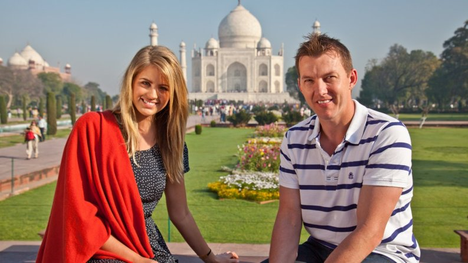
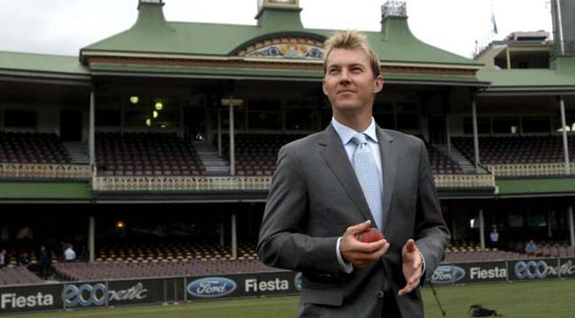
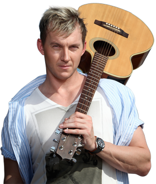

FASHION DESIGN
THE BL COLLECTION

“BL Represents the young professional man growing but not ageing. Planned over a season you will see a constant variety that will make you the first among equals. Athletic silhouettes to ensure your tailored garments are exactly that.”
Brett launched his own fashion label on 1 May, 2001.
The clothing line has been chosen from a range of local and international manufacturers,
with the underlying aim of developing a menswear label that is stylish, modern and comfortable.
Marriage/Dating

Lee got married to Elizabeth Kemp in June 2006. The couple has a son named Preston Charles. After two years of marriage on 21 August 2008, he confirmed his separation from Kemp and they were divorced in 2009. Later Brett Lee started dating Lana Anderson for one year and tied the knot in a private ceremony at his new home in Seaforth, New South Wales in March 2014.
Media Work

After announcing his retirement from international cricket, Lee joined the Channel Nine cricket commentating team, reuniting with former
Australia and New South Wales teammate Michael Slater. He also provides support for Slater on The Cricket Show. Channel Nine commentators Mark Nicholas, Shane Warne and Mark Taylor, Ian Healy, Brett Lee and Warne descend to that level. Recently, was commentator for Wt20 which was held in India 2016. We all love the way his commentating and his energy.
Music Band

White Shoe Theory is not Brett’s first success in music. Brett’s former band Six & Out were comprised of Brett, his brother Shane and fellow NSW cricketing team mates Richard Chee Quee, Brad McNamara and Gavin Robertson. Brett and Shane’s younger brother, Grant, occasionally joins them when he’s available. The band released a self-titled album, as well as a stand alone EP, Bring It On.
SIX & OUT MUSIC
Endorsements
A company that cricket legend Brett Lee once used his star power to endorse has been accused of ripping off as much as $10 billion from as many as 50 million Indian investors in an elaborate, long-running Ponzi scheme. Lee, 39, became the Australian brand ambassador for Pearls Group in 2010 and even featured in an advertisement, building sandcastles alongside children.
But questions have been raised about Lee's involvement with the group after its executives were arrested in January, with The Australian reporting the scheme allegedly funneled at least $130 million into Australia. Lawyers involved in the case reportedly told The Australian that Lee's role would be examined during the investigation.